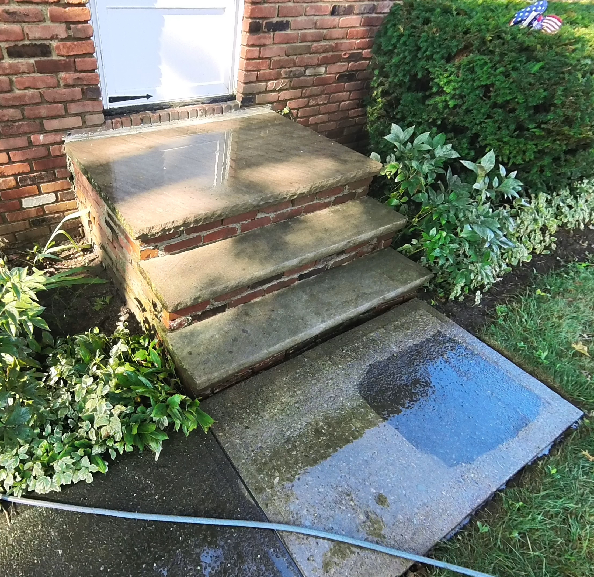
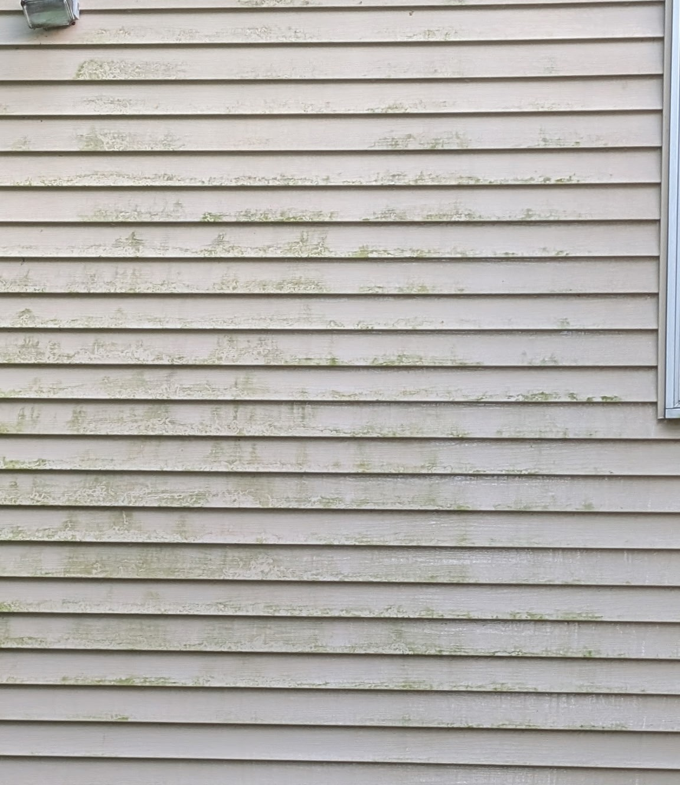
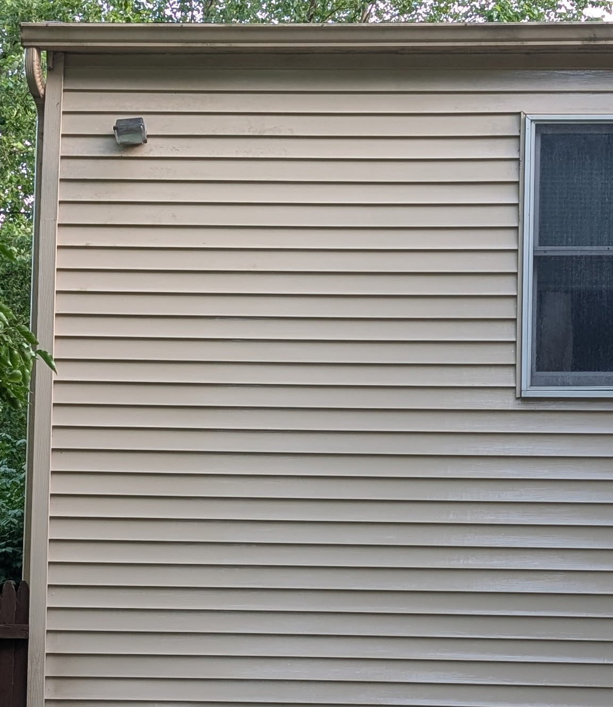

Residential Concrete Restoration
Protect your home's structural curb appeal with premium deep cleaning designed exclusively for flat concrete surfaces.
Concrete Driveway Cleaning
Deep cleaning treatments designed to eliminate seasonal dark mold, algae growth, and embedded environmental dirt from residential driveways.
Sidewalk & Walkway Cleaning
Targeted pressure washing to clear away slick organic layers and slip hazards, leaving your walkways bright, safe, and clean.
Patio Concrete Blasting
Complete washing solutions engineered to restore back patios, concrete slabs, and outdoor entertaining foundations back to a uniform finish.
Commercial Surface Cleaning
Keep your storefront walkways and drive-thru lanes pristine, bright, and safe for your customers.
Drive-Thru Lane Cleaning
Targeted deep-flushing to clear out surface dirt, traffic grime, and dark weather stains from concrete restaurant lanes and local bank loops.
Storefronts & Retail Walkways
Surface washing designed to clear off seasonal grime, organic buildup, and salt stains from concrete sidewalks and retail entryways.
Dumpster Pad Wash Downs
High-pressure washing paired with specialized treatment applications to lift surface discoloration and sanitize high-traffic commercial waste concrete.
Our Work
See the difference a professional deep clean makes. Drag the slider below to fade between before & after!








Contact Us
Ready to restore your property's curb appeal? Get in touch today.